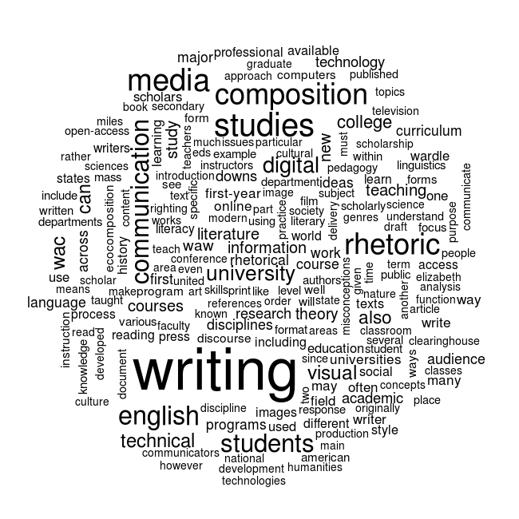

Sweeping it Under the Rug: Data Janitorial Work, Statistical Reasoning, and Information Rhetorics
by Aaron Beveridge
XXXNeed visuals for introductionXXX
Introduction
As digital rhetoric and visual design studies turn their attention to data visualization and infographic media, much work remains to understand quantitative reasoning and statistical analysis as rhetorical constructions. In “Rhetorical Numbers: A Case for Quantitative Writing in the Composition Classroom,” Joanna Wolfe argues that rhetorical approaches to quantitative reasoning remain largely overlooked in writing studies classrooms. As Wolfe explains, “Rather than reject quantitative argument out of hand, contemporary rhetoricians need to train their students to recognize the unethical, deceptive, and misleading as well as thoughtful, instightful, and revealing applications of quantitative rhetoric” (454). Beyond the concerns of the writing classroom, data literacy is quickly becoming a crucial component of public discourse and digital rhetoric on a broader scale. Since 2012, the White House has been following through with President Obama’s “Big Data Initiative” which attempts to provide “consumers with the full landscape of information they need to make optimal energy decisions; to enabling civil engineers to monitor and identify at-risk infrastructure; to informing more accurate predictions of natural disasters; […] to advance national goals such as economic growth, education, health, and clean energy” (cite). As more and more of traditional “analyses” are replaced with data “analytics”1, critically aware citizens must be provided with access to underlying datasets on which analytics are built, and with the statistical methods used to process, analyze, and visualize the data. However, an improved access to data and a greater transparency among analytics is meaningless if the available means of statistcal analylsis are not understood as inventive, persuasive forms of argumentation.
This article provides examples for how the choices made during data processing and statistical analysis effect the visualizations those analyses produce. The use of the term choice here suggests more variablility and indeterminacy than what is often implied by the concept of statistical reasoning, but the range of possibilities—the notion that data analysis is inventive and experimental—is an largely unexplored analogue between rhetoric and statistics. Often, when rhetoric and statistics are compared, it is the supposed “deceptive” nature of statistical “facts” that are discussed. Although the origin of the quote remains uncertain, Mark Twain is credited for popularizing the phrase: “There are three kinds of lies: lies, damned lies, and statistics.” This deceptive understanding of statistics is similar to the way rhetoric is often described in journalism or politics—usually indicating a particular stylistics that appears overtly persuasive. Yet, in stark contrast, visualized statistical analyses often appear in jounalism, entertainment media, and politics as impenetrable and unquestionable form of evidence. As Wolfe explains, “there is a paradox in that on one hand our culture tends to represent statistical evidence as a type of ‘fact’ and therefore immune to the arts of rhetoric, but on the other hand we are deeply aware and suspicious of the ability of statistics to be ‘cooked,’ ‘massaged,’ ‘spun,’ or otherwise manipulated” (453).
While Wolfe uses the phrase “quantitative rhetoric,” I prefer to use the broader concept of “statistical reasoning” because this allows for both quantitative and qualitative forms of data and information. Both rhetoric and statistics provide wide-ranging methods of analysis and knowledge-construction that may be applied to an endless array of topics and content for research. Because of this commonality, the two are active in many (if not all) disciplines in the academy. While many forms of rhetoric are associated with qualitative research, and statistics with quantitative research, they frequently cross over these boundaries. For example, ethnographic research relies on discourse analysis in order to carefully construct case studies about situated variations of cultural rhetorics and artifacts. However, if enough individual cases are reconstructed and categorized, then these cases may be counted and compared quantitatively. As a counter example, statistical tools may be used to test a hypothesis against a particular dataset, and then rhetoric is utilized when researchers interpret and communicate their results. While these two examples draw a traditional line between rhetoric and statistics, in the areas of data literacy and information design no easy distinction exists. Data visualization and descriptive statistics are applicable to both quantitative and qualitative research.
In order to move beyond a simplistic truth/lie binary of statistical reasoning, the inventive aspects of statistcal analysis require closer examination. As Wolfe argues, “students should have practice making their own arguments from quantitative data […] so they can see the role invention plays” (455). In the tradition of statistical analysis, this inventive practice is called “exploratory” statistics. As John W. Tukey notes in his now canonical text Exploratory Data Analysis, “many of the indications to be discerned in bodies of data are accidental or misleading. […] To fail to collect all appearances because some—or even most—are only accidents would, however, be gross misfeasance.” Yet, as Tukey explains, exploratory data analysis “can never be the whole story, but nothing else can serve as the foundation stone—as the first step” (3). XXXRestate, summarize exporatory research, transitionXXX
XXXThis needs to be its own paragraph with examplesXXX The problem with observing this first exploratory step is that many of the cloud data visualization tools available online have already worked through the exploratory aspects of their analyses—much like reading the polished final draft of an essay. Just as new writers have to understand that mistake-filled first drafts are a common aspect of writing, data literacy requires an understanding of the common exploratory methods that lead to polished infographics and effective data analytics. XXXThis is where the “sweeping it under the rug” can really come to lifeXXX.
XXXUse the source LG gave you to revise this paragraph. Provide other positive examples of WCs in use, and revise this paragraph to be positiveXXX Wordcloud or tagcloud data visualizations exemplify this problem. Wordclouds may be some-what out of fashion for visualizing textual analysis. Or, maybe wordclouds are so common that they are no longer thought of as a useful form of data visualization—especially as more complex analytics have become readily available. However, their ubiquity is precisely why they are useful for the demonstration that follows. A useful comparison for wordclouds is understanding them as similar to a cliche idomatic expression—seeing a wordcloud is like hearing “it’s raining cats and dogs.” The individual words that make up the idiom, or the etymology that led to its frequent use, are often not considered in the passing of a conversation. Likewise, with wordclouds, there are many steps that occur between the raw unstructured text and the final wordcloud visualization. Some of the steps require data scrubbing or data janitorial work, others involve making quantitative choices with how text data is organized and represented, and finally, choices are made regarding how the colors are programmatically asigned to quantitative categories of words.
When a wordcloud tool like Wordle.net is used, many of the data janitorial steps that process the text are hidden in the underlying computer code that turns the raw text into a wordcloud visualization. Certainly, there is nothing wrong with using cloud tools to produce a data visualization. Indeed, many of the cloud tools provide an accessible way for students and scholars to begin investigating the visual aspects of data analysis. As with any form of analysis, the danger of such tools is their standardization and overused application. Often they require a specific data type, one that is cleaned and processed according to an already well-tested methodology that produces a polished data visualization. In many ways this is similar to the limitations of the 5 paragraph essay. XXXCite LG and CGB hereXXX. While there is nothing inherently wrong with the 5 paragraph essay (this article, in fact, uses a 5 section theme that is analogous to the 5 paragraph essay—as do many academic articles), the risk of any ubiquitous form or methodology is that it is applied to too wide a range of objects and thus loses its descriptive and analytical effectiveness. In many respects, this has happened to the wordcloud visualization. Thus, revealing the exploratory aspects of this common tool will provide a pragmatic introduction to the inventive aspects of statistical reasoning and its relenace for data literacy and information rhetorics.
Methodology
XXXThis section needs a better framework—why is it important? why is it included?XXX

{kind=link}
The data visualizations produced below rely on a form of text analysis called text mining or text data mining. Text mining takes raw unstructured text and turns it into structured data that can be statistically analyzed. For this article, a corpus of text documents is constructed from the following Wikipedia pages:
- Composition Studies
- Computers and Writing
- Digital Rhetoric
- Ecocomposition
- English Studies
- Media Studies
- Technical Communication
- Visual Rhetoric
- Writing about Writing
- Writing Across the Curriculum
The text contained in the articles was systematically collected with a data mining application called MassMine. MassMine is funded by the National Endowment for the Humanities, and is an open source software that supports social network data mining for academic research. After MassMine collected the text data from Wikipedia, the data scrubbing and analysis was completed with the open source programming language called R. R is designed specifically for data extraction and statistical analysis, and it is one of the best tools available for making informatics and data visualization methodologies widely accessible.
Amanda Cox, the graphics editor for the New York Times, uses R to produce many of her data visualizations for the Times. Cox has said that R is “the greatest software on Earth,” and she explains that while it is not the only tool she uses in her work, it is her preferred tool for “sketching” and exploring data when developing visual analyses. Although R can be used for more complex modeling and statistical predictions, Cox explains that its built in features remain flexible to fit many types of data and its package framework is friendly to new users who do not want to build all of their analyses from scratch. The Data Stories podcast has a recent interview with Cox available here, and R-Bloggers has videos of Cox talking about using R at the Times available here. These are useful data literacy resources that provide real-world examples of how data analyses and visualizations are produced for a major media outlet.
All of the of the raw text data and the R code that produced the visualizations for this article are available here on GitHub. GitHub is a free social coding site that provides support for open development and collaborative programming. Hopefully, by providing access to all of the code and text data that produced the visualizations below, it will allow other scholars and teachers to modify or build upon these examples and produce their own information rhetorics. Data literacy can be intimidating for rhetoric and writing scholars who have limited training in statistics and data visualization, but encouraging open and collaborative development will allow new projects to draw from and build on previous ones. As Mary K. Stewart argues, writing studies must continue to develop “a definition of digital literacy as a learning outcome that has three characterstics: multimodal composition, information, and collaboration.” As GitHub is quickly becoming the largest social coding site on the web, it provides an open and collaborative framework for development that supports the learning outcomes that Steward describes.
Data Janitorial Work
In order to build a wordcloud we need to conduct a word frequency analysis. Word frequency analyses count how many times a unique string of characters, such as “writing,” appear in a corpus. Word frequency is the key quantitative component in a wordcloud. The words with the highest frequency are displayed with the largest font, and the words with the lowest frequency are displayed as the smallest font. Computers do not “know” what a word is. Rather, the computer merely locates unique strings of characters and counts how often they repeat. Since individual words are differentiated based on the spaces between the sets of characters, the word “writing,” with a comma next a different set of characters than “writing” without a comma. Also, the word “Writing” with a capital “W” is a different string of characters than “writing” with a lowercase “w” because uppercase and lowercase letters are different characters. Therefore, before a word frequency analysis can be completed, the dataset needs to be “cleaned” so that “Writing” and “writing,” and “writing” are all counted as three occurances of the word “writing”—rather than the computer counting them as three separate sets of characters. In order for “writing” to be counted as three occurances of the same word, punctuation is removed from the corpus and all letters are changed to lower case.
Another, area of data cleaning or scrubbing that needs to occur before we can complete a frequency analysis is the removal of stop words. There is no universal list of stop words, but lists of stop words removed from text corpora tend to be the words that do not hold semantic value for analysis. Words like “the, and, it, is, there, that” and so forth are the typical words removed when stop words are removed from corpora. Also, numbers are usually removed as well, unless there are numbers in a corpus that are of particular relevance to an analysis. For example, if there are years like “2015” or “1975” that are important to an analyis, then numbers will not be removed.
This is one example of what is called data scrubbing or data janitorial work.2 While much attention is given to beautiful data visualizations and wonderfully designed infographic media, the “art” of data science is the systematic cleaning of data so that meaningful summaries and descriptions may be produced without reducing the dataset to something that is no longer representative of its original unstructured content. There is no universal or always-correct methodology for how data janitorial work should proceed. Data scrubbing is always a relative triangulation among a particular dataset, a project’s goals, and the analyses and visualizations that a project eventually produces. This is the most difficult step to understand in data literacy because for many scholars in the humanities the term “data” is generally understood as something synonymous with a spreadsheet. Data is often percieved as the columns of numbers or words that appear in a basic grid format. While spreadsheet data is no doubt an important form of data, once data has been transformed to spreadsheet form, many of the important data scrubbing activities have likely already occurred. Anything can become data. One of the primary questions statistcal rhetoric must ask in data literacy is thow was a dataset transformed from its “raw”3 form into something may be categorized and counted? The transition from unstructured data to spreadsheet (or some other structured form) is often the site where explortory analysis and inventive methods are employed. Certainly, this is not the only site of exploration and invention in statistcal rhetoric, but data scrubbing is often the most powerful and the most overlooked step in making a dataset meaningful.
The first visualization below shows what a default wordcloud would look like if a word frequency analysis was comleted without removing punctuation, numbers, and stop words. By default, R’s wordcloud package changes all words to lowercase, but you can imagine how much more variation there would be in the corpus if this was not a default feature. For example, “the” and “The” would be displayed as separate words. Furthermore, the character strings “===” and “====” show up in the visualization below as well. These strings of characters are used to mark section headers for Wikipedia, and since there are spaces between these strings they are represented in the wordcloud as if they are important words in the corpus. Since there are a high number of section headers in the Wikipedia articles, these strings of characters have a word frequency large enough to be displayed in the visualization. 
In the above wordcloud, we can immediately see one consequence of not cleaning the data: “the” and “and” show up as the largest words in the visualization. By looking closely, there are many variations of “writing” that appear in the visualization with punctuations attached to the string of letters, but “writing” without any punctuation does still show up as the third most frequent term. The bar graph below displays the top 10 terms prior to scrubbing the Wikipedia corpus:

The two images below show the result of scrubbing the Wikipedia corpus. The new bar graph and wordcloud visualizations have changed drastically as a result of the data janitorial work. Here is a list of the transformations that have occurred:
- Punctuation removed
- Numbers removed
- Entire corpus changed to lowercase
- Stopwords removed

As the two above images display, data janitorial work has a profound effect on what the wordcloud may say about the data contained in the Wikipedia corpus. The changes in the visualization were made without making any adjustments to the default behavior of the wordcloud, but instead focusing on the how the underlying dataset may be reduced in order to prioritize words more relavant to the type of analysis conducted. If the examples contained in this article were focused on a different type of data, then methods of scrubbing the data may occur in otherwise different fashion altogether. In manual data collection—where humans collect data and place them categorically in a spreadsheet or a database—data scrubbing happens at the moment the human makes a categorical decision about various data in their project. For example, in a research project I am currently conducting with a colleague, we are studying local graphiti art by taking photographs of the art and categorizing them rhetorically. The act of deciding which column or category would best fit each photo is a type of data janitorial work—where the unstructed collection of photos are placed into categories and provided with additional metadata. There is no universal methodology of data janitorial work, and often this exploratory and inventive aspect of data analysis is not disclosed or made available along with data visualizations. However, limitations in access do no reduce the role that data scrubbing plays in data visualization, and working to better understand this overlooked aspect of data analysis can further influence inventive approaches to statistical rhetoric.
Statistical Reasoning
After the data janitorial work is complete, allowing a more acurate calculation of word frequencies, the next areas to explore with the wordcloud visualization are how the words are laid out in the visualization and how colors are assigned. Certainly, there are no right answers to these questions—which is another reason they are as rhetorical as they are quantitative. But that is precisely the rub—they are both quantitative and rhetorical—which makes them more difficult to determine than the janitorial work. The more ambiguous a visualization, the more it tends toward the rhetorical end of the spectrum, and the more precise the more it tends toward the quantitative end of the spectrum. The mistake, however, is thinking that very precise visualizations are not at all rhetorical. As Darrell Huff and Irving Geis explain in How to Lie with Statistics, “This suggests giving statistical material […] a very sharp second look before accepting any of them. Sometimes a careful squint will sharpen the focus. But arbitrarily rejecting statistical methods makes no sense either. That is like refusing to read because writers sometimes use words to hide facts and relationships rather than to reveal them” (121). However, the spectrum works the same from the opposite perspective as well. Just because wordcloud visualizations are more ambiguous does not mean that statistical reasoning is not relevant.
In the Data Janitorial Work section, the words in the wordclouds were laid out according to their frequencies. The words with the highest frequency were placed in the center, and then the words were arranged in circular fashion outward from center as their frequency lessoned. While this ordering makes sense logically, it actually makes it more difficult to see details and contrast. Whereas it may be counterintuitive, a random word layout allows for a perception of greater detail amount the ranges of word frequency. The two images below show the difference between a logical and random word layout. The first image displays the the center-out frequency layout, and the second image displays the words at random with 10% of the words turned 90 degrees.

By changing the logic of how the words are laid out in the wordcloud, it becomes easier to visually analyze and compare frequencies. While the layout is randomized, the size of the word font remains categorized according to frequency. This allows the visualization to display more contrast among the words without making the visual altogether useless. Also, by turning a portion of the words 90 degrees, this also allows for greater contrast and variation in the visual. There is not space in this article to discuss the importance of randomization for statistical reasoning and data analysis, but it is important to note that the change from a frequency ordered layout to a random one is counterintuitive until it is tested. The question to ask, then, is which layout is more appropriate to the dataset and project goals? With a visualization as ambiguous as a wordcloud, there is likely no useful answer to this question, but the comparison of the two layouts exemplifies the problem of proportionality. If the point of the wordcloud was to only display the variation in word frequencies, then the random layout may create the perception of more frequency variation than is actually occurring in the corpus. Such questions stretch the limits of what a wordcloud visual is intended to portray, but they are important because the raise the question of why a particular visualization was chosen in the first place.
While word color selection, like layout, could also be asigned at random, too much randomization would render the visualization meaningless. Therefore, colors can be assigned to levels of frequency in the same way that font size is determined. The visualization below retains the random layout, and colors are assigned from red to blue—with dark red assigned to the most frequent word, light red assigned to less frequeny words, and blue assigned to the least frequent words. The logic of this color designation follows the standard “red is hot” and “blue is cold” color use. However, as the image below displays, the common color hot/cold color assignment may not be the best choice for a wordcloud.

As the image above shows, the light blue and light red colors—meant to display a wider range of frequencies—actually serves to emphasize only the dark red and dark blue colors. However, as the next image shows, if rather than using a range between only two colors, a greater variation of dark colors are used, the differences in frequency variation and contrast are easer to percieve.
Now that colors have been assigned, the word layout can be re-explored. In the image below, the words are once again laid out according to their frequency. When comparing the two images, there are now advantages to both layout approaches. The randomized image above may still have a slight edge with visualing contrast among the variations in frequency, but the new image below is better at displaying which words fit within a similar frequency range. For example, it is much easier to see in the new image below that “composition,” “media,” “studies,” and “rhetoric” are in the same frequency range.

Finally, as mentioned earlier in this section, the question of whether a wordcloud is an appropriate visualization for a particular analysis must be considered. For example, in the random wordcloud above it would be a mistake to draw conclusions based on how close to one another words appear in the wordcloud. There are likely countless statistical approaches for determining the relationships among data. One such visualization for a corpus of text is a cluster analysis that looks at how words cluster across all the documents. In the graph below, the nodes are words and the lines draws between them are determined by how often the two words appear together in each of the documents. If two words appear together more than 25% of the time, then a line is drawn between them. Frequency analysis only allows provides a count of which words appear the most often in the corpus, but a cluster analysis allows for a determination of which less-frequent words are important to the corpus and how they may closely associate with other words.

XXXNeed conclusion for this section–restating and summarizing arguments made throughout the sectionXXX
Conclusion
Whereas “analysis” often refers to human reading, observation, or investigation of underlying evidence, sources, or data, “analytics” are often systematized statistical analyses of datasets too large for traditional analyses, where methodologies may be re-applied in the future on other similar data types to produce a visual analysis. For example, Wordle.net may be understood as an “analytic” because it replicates textual analyses of various textual data and produces wordcloud visuals.↩
The New York Times has a great article explaining how so much of data analysis is bottlenecked by data janitorial concerns. Article is available here↩
XXXMention Raw Data is an Oxymoron hereXXX↩